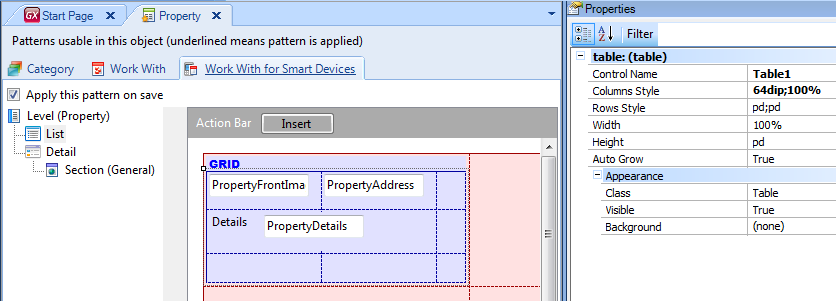
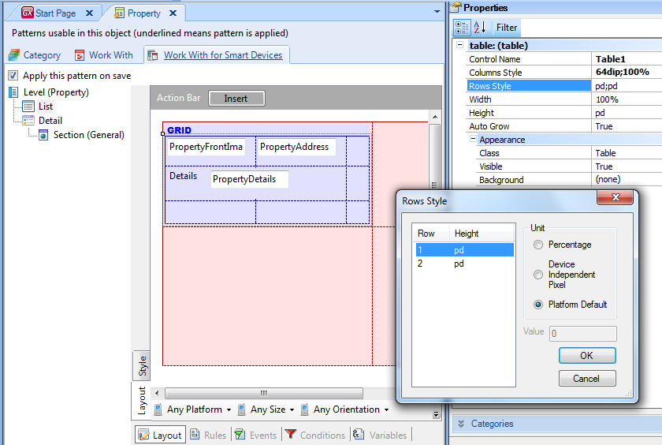
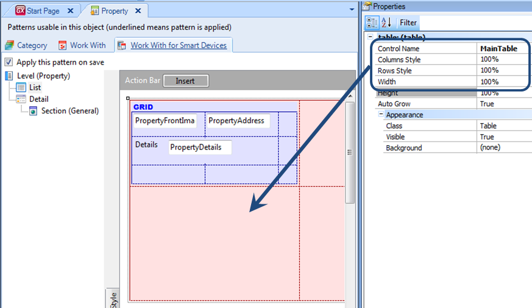
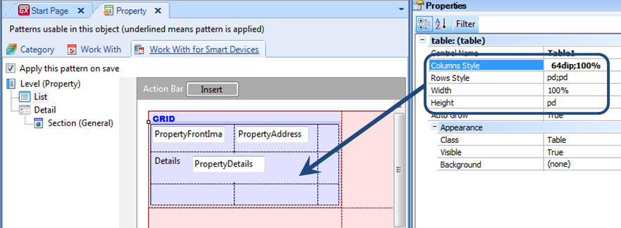
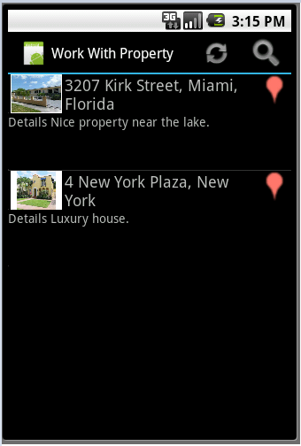
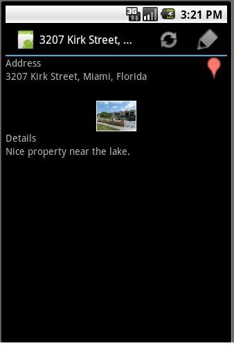
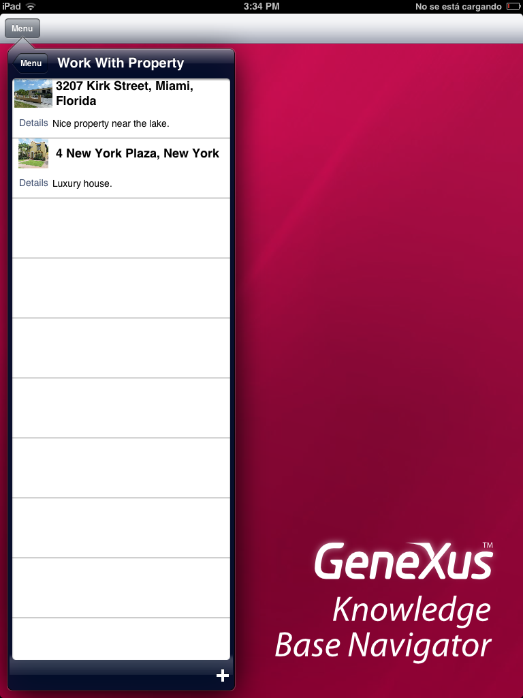

As mentioned in this article, when designing the User Interface of a Smart Devices application, sometimes different Layouts must be used to encompass the various platforms, modes and orientations. Layouts designed for applications are made up basically by the data to be displayed and the actions the user can perform. Layouts are designed using tables. Tables have rows, columns and cells, all of them have properties that allow configuring how data is displayed. For example, when the WWSD is applied to a Transaction, the Layouts of the List and Detail nodes are created using tables:  Tables have, among others, the following properties:
These properties allow setting row and column size in order to design the application layouts. The values for these properties can be expressed in various units:
Further information about how to design layouts in Smart Devices applications can be obtained in this article.  Default property valuesThus, some of the above properties will use values in the units we have seen (%, dip, pd), and they can even be combined. For example, the default value of the Column Style property is “64dip; 100%”, which means that the first column will take 64 dips, and the following column will take all the remaining space. The default property values will vary for each table. For example, the List has two tables: one containing the Grid and another inside the Grid. Their default values are different: Table containing the Grid Table inside the Grid And the same goes for the other tables of the Detail and each WWSD section. Properties’ “Platform Default” (pd) valueAs mentioned before, applying this value to a property means: “Using the best value depending on the platform”. In addition to depending on the platform used, this value also depends on what you want to display in a cell. That is to say, the platform default value varies depending on whether a field has a label or doesn’t have one, or if the field label will be displayed on top or to the left. The same happens when an Edit or View layout is involved. Below is a list of platform default values for the Row Style property of the tables used in WWSD Layouts:
ExamplesWhen running a Smart Device application with default configurations, in this case in the Android emulator, Lists are displayed as shown below:  Below is the Detail associated with one of the elements:  For iOS, lists are displayed as shown below:  Below is the associated Detail:
| ||||||||||||||||||||||||||||||||||||